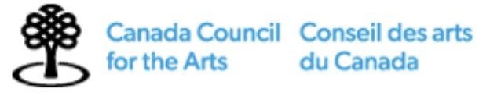
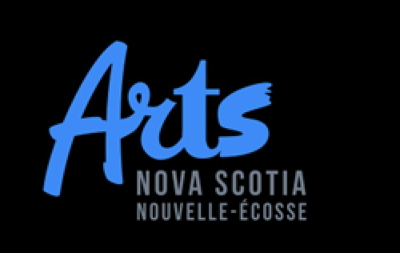

Acknowledgements
Thank you to Hillary Muller for her translation consultation, Grace Ivey for staging scenes II, III, IV, V, VI, VII, VIII, and IX, and to Jaclyn Grossman, Anna Theodosaskis and the Association for Opera in Canada's New Works Encouragement Programs for their enthusiasm, mentorship and support of this project.
The commissioning of Sappho: Tell Everyone by Danika Lorèn and the presentation of this website is made possible thanks to generous support from the Canada Council for the Arts, Arts Nova Scotia and the Fondation McAbbie.
Thank you to all who celebrate the creation of new works that tell new stories.

